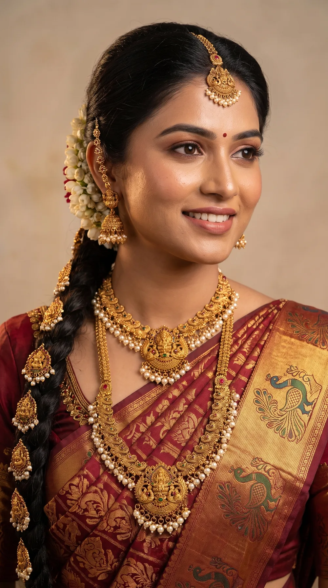
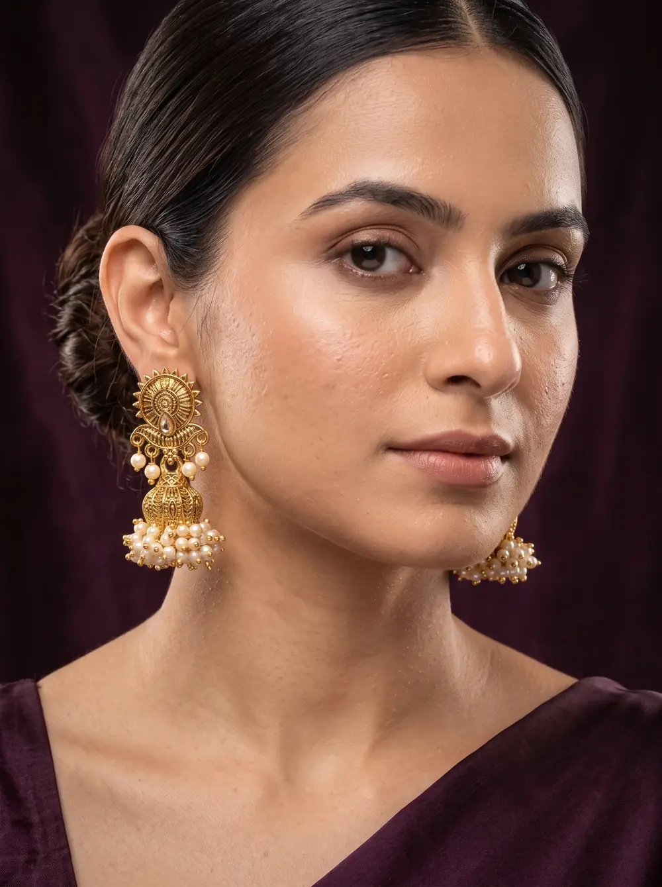
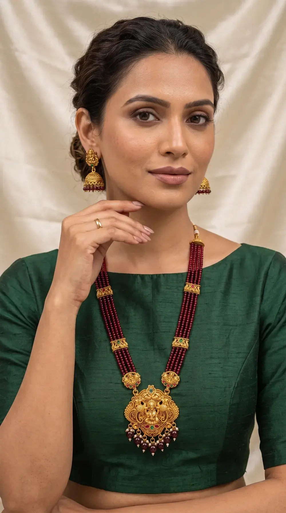

CARE & BUYING GUIDE
The Complete Jewellery Care Guide
How to keep gold plating looking new for years - and how to choose pieces that suit you.
What imitation jewellery actually is
Premium imitation jewellery - also called fashion or artificial jewellery - is built on a brass or alloy base that is then finished with a layer of real gold through electroplating. The thickness of that layer is what separates a piece that lasts years from one that fades in weeks.
At Saubhagya every piece uses micron gold plating, finished with kundan, polki, American Diamond or semi-precious stone work by hand. That's why a heritage temple necklace that would cost lakhs in solid gold sits comfortably in the ₹500-₹3,000 range - you are paying for craftsmanship and design, not bullion weight.
The honest truth: no plating is permanent. Plating is a surface, and every surface wears. Everything in this guide is about slowing that wear down - and it genuinely works. The difference between careless and careful handling is measured in years, not weeks.
The 60-second routine that saves your plating
If you remember nothing else from this page, remember this sequence. It costs you a minute a day and is by far the highest-impact thing you can do.
Jewellery goes on last
Perfume, hairspray, deodorant, lotion, makeup - all of it goes on first and must be fully dry before jewellery touches your skin.
Take it off before water
Bathing, swimming, washing dishes, exercising, sleeping. Jewellery is the first thing that comes off when you get home.
Ten seconds after wear
A dry microfibre cloth, ten seconds per piece. Sweat and skin oils are mildly acidic and sit on the plating overnight if you skip this.
Dry and separated
Own pouch, dry box, closed lid. Never a loose pile in a drawer - pieces rubbing against each other scratch through the plating.
Five things that destroy gold plating
Do
- Let perfume dry fully before wearing
- Remove before bathing and swimming
- Wipe with a dry soft cloth after wear
- Store each piece separately in a pouch
- Keep silica gel in your jewellery box
Don't
- Spray perfume directly onto jewellery
- Wear it in the pool, shower or gym
- Use toothpaste, baking soda or Colin
- Dump pieces loose in one box
- Store it in a humid bathroom
Perfume & sprays
Alcohol strips the protective top coat and dulls the finish permanently - the single biggest killer.
Water & chlorine
Chlorine is aggressive on plating; even tap water leaves mineral deposits as it dries.
Sweat
Mildly acidic and unavoidable - which is why the post-wear wipe matters so much.
Abrasion
Pieces rubbing against each other scratch through the plating layer in weeks.
Humidity
Trapped moisture tarnishes the base metal from the edges inward, fast in monsoons.
How to clean each type safely
Plain gold-plated pieces
Dry microfibre cloth only, wiped gently in one direction. If there is visible grime, use a cloth barely dampened with plain water, then dry immediately and completely. Never soak.
Kundan and polki
These stones are set with natural lac (resin), which softens with heat and dissolves with solvents. Never use water, alcohol or ultrasonic cleaners - stones will loosen and fall out. Use a dry, soft makeup brush to lift dust from the settings.
Pearls and beads
Wipe with a slightly damp cloth and dry at once. Pearls are porous and absorb perfume and sweat - always wipe them after wearing, and never store them in an airtight plastic bag, which dries and cracks the nacre.
American Diamond (CZ)
The stones themselves are hardy, but the plating around them is not. A dry soft brush for the settings and a microfibre wipe for the metal is all that's needed to bring the sparkle back.
Never use: toothpaste, baking soda, vinegar, lemon, Colin/glass cleaner, silver polish liquid, or an ultrasonic cleaner. Every one of these strips gold plating. They are advice meant for solid gold or sterling silver, not for plated jewellery.
Storage - and surviving the Indian monsoon
Humidity is the quiet enemy. In coastal cities like Mumbai, monsoon humidity regularly crosses 80%, and moisture trapped against plated metal will tarnish the base from the edges in.
- One pouch per piece. Soft cloth or velvet, never sharing with another item.
- Airtight box with silica gel. Save the sachets that come with shoes and bags - drop two or three into your jewellery box and replace them every few months.
- Away from the bathroom. Steam from daily showers is enough to tarnish a plated set stored nearby.
- Anti-tarnish strips are worth the small cost for bridal sets you only wear occasionally.
- Lay necklaces flat. Hanging heavy pieces long-term stretches the chain and stresses the clasp.
Choosing jewellery by occasion and face shape
By occasion



Wedding or reception (yours): a full bridal set - long haaram plus short necklace, statement jhumkas, maang tikka. Go bold; photographs flatten detail. Attending someone else's wedding: one hero piece only - either a statement necklace or statement earrings, never both. Festive and pooja: temple jewellery with Lakshmi motifs and antique gold finish, traditional and warm in photos. Office and daily: small studs, a thin chain, a delicate pendant. Gifting: a short necklace set or classic jhumkas - safe if you don't know their taste.
By face shape (earrings)
Long dangles and linear drops add length. Avoid large hoops and round studs.
Almost everything works - the most flexible shape. Jhumkas and studs both flatter.
Curved shapes soften angles - hoops, chandbalis and rounded jhumkas.
Wider-at-the-bottom shapes balance a narrow chin - chandbalis and teardrops.
By neckline (necklaces)
A pendant that follows the V, or a short necklace sitting just above it.
A long haaram worn over the fabric, or skip the necklace and go statement earrings.
A choker or short necklace - long chains fight the horizontal line.
A layered look - short necklace plus long haaram - the classic, most photogenic combo.
How to judge quality before you buy
- Ask about plating, not just "gold finish". A seller who can tell you the plating type and base metal is being specific; vague "gold look" wording tells you nothing.
- Look at the back of the piece. Quality manufacturers finish the reverse properly. Rough edges, visible glue or unfinished solder are the fastest tell.
- Check the clasp and hooks. These fail long before the design does. Screw-back and secure S-hooks outlast cheap spring rings.
- Weight tells a story. Substantial pieces indicate a solid base rather than thin hollow stamping.
- Buy from a manufacturer, not a reseller. When the seller makes the piece in-house, defects get repaired instead of argued about.
Every Saubhagya piece is manufactured in our own Mumbai workshop, individually inspected and sealed before dispatch, and any manufacturing defect is repaired or replaced free. More detail on Shipping & Returns, and common questions are answered on our FAQ page.
Styles the guide is talking about
View all →Ready to find your piece?
Handcrafted temple, kundan and American Diamond jewellery - free insured delivery across India.
EXPLORE THE COLLECTION